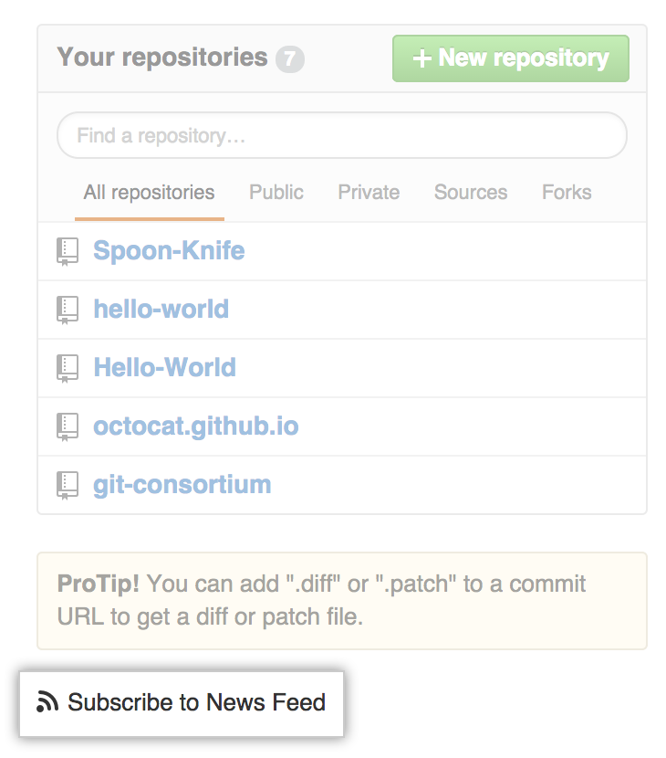
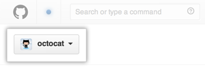
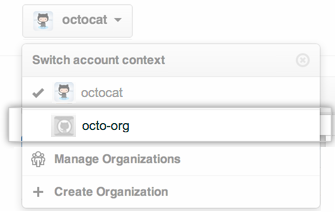
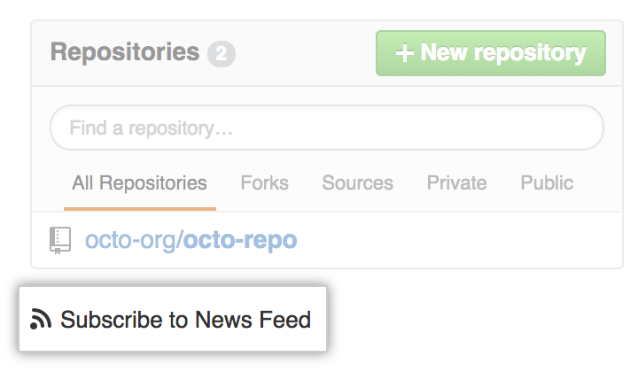

Use your personal News Feed to keep up with recent activity on repositories you watch as well as recent activity by people you follow, or use an organization's News Feed to keep up with recent activity on repositories owned by that organization.
Personal News Feed
Your personal News Feed shows activity—other than your own!—on repositories you watch. Specifically, it will tell you when someone else:
- opens or closes an issue
- opens, merges, or closes a pull request
- creates or deletes a branch
- comments on an issue, pull request, or commit
- pushes new commits to GitHub
Your personal News Feed also shows activity by people you follow. Specifically, it will tell you when someone you follow:
- stars a repository
- follows someone else
- creates a public repository
- converts a private repository into a public repository
- is added as a collaborator to a public repository owned by a user account
- owns a public repository that has just been forked
To access your News Feed:
- Sign in to your personal GitHub account.
- Open your personal dashboard.
To subscribe to your personal News Feed in your favorite RSS reader, click Subscribe to News Feed under your list of repositories.

Organization News Feed
An organization's News Feed shows activity—other than your own!—on repositories owned by that organization. Specifically, it will tell you when someone else:
- opens or closes an issue
- opens, merges, or closes a pull request
- creates or deletes a branch
- comments on an issue, pull request, or commit
- pushes new commits to GitHub
To access an organization's News Feed:
- Sign in to your personal GitHub account.
- Open your personal dashboard.
- Click the account context switcher in the upper-left corner of the page. 
- Select an organization from the drop-down menu. 
To subscribe to an organization's News Feed in your favorite RSS reader, click Subscribe to News Feed under the organization's list of repositories.
